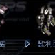

適合對空的單位，視野較廣。缺點是速度偏慢、升級較難，但有基本裝甲，戰鬥中不易被擊破。
| 名稱 | 技術等級 | 能量消耗 | 說明 |
|---|---|---|---|
| UCD 安瓿 | - | - | 治療人類單位 |
| MCD 安瓿 | - | - | 治療機械單位 |
| 懸浮 | - | - | 不留腳印 |
| 隱形 | - | - | 隱形 |
| PATRIOT 飛彈 | 82 | 50 KJ | 攔截 GTA 發射的核武 |
| 地毯浮游 | 42 | 70 KJ | 浮游 |
| 名稱 | 技術等級 | 攻擊力 | 射程 | 射速 | 攻擊模式 |
|---|---|---|---|---|---|
| Rocket Launcher | 1 | 47 | 17.0m | 0.6s | 對空 |
| Ruby Laser | 7 | 66 | 17.0m | 0.7s | 對空 |
| Heavy Stite | 76 | 122 | 24.0m | 0.6s | 對空 |
| Circle Cubic Missile | 133 | 127 | 26.0m | 0.4s | 對空 |
資料來源：Ever☆Zone Tistory /109